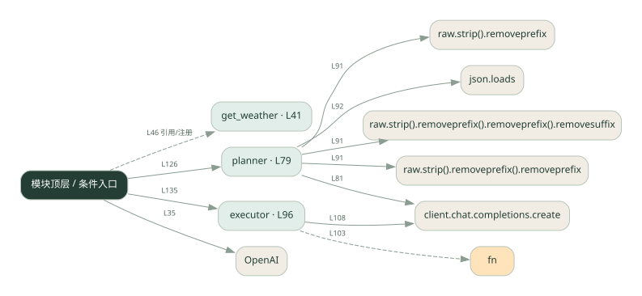

1-6 · 全课程第 6 节
先计划再执行
plan_agent.py
源码快照 b96463f79944 · 静态解析 · 2026-09-10
01 / 要完成的事
先生成步骤，再让执行器按步骤调用工具并汇总。
02 / 为什么要做
复杂问题一次直接回答容易漏步骤；拆开后能检查每步是否完成。
03 / 当前代码状态
模型请求与本地工具是不同边界：这些文件中的天气工具使用示例逻辑，不能将示例天气当成实时查询结果。
存在外部服务或模型依赖；执行前需按源文件配置依赖和凭据，可能联网或产生 API 费用。 本次只做静态解析，没有运行练习，也没有替你填写或修改原代码。
04 / 调用图
打开大图 ↗实线：源码中的直接调用；虚线：函数引用/注册、动态调用或按方法名推断的候选。L 是调用所在源码行号。箭头不表示执行顺序或每次必经；分支、循环、异步调度及框架内部调用需结合源码。灰色是外部/未解析目标，橙色是动态分发；省略 print、len 和常规容器操作以减少干扰。孤立函数可能尚未接入。

先从 模块入口 出发，沿箭头找到本文件函数，再查看外部调用或动态分发。右侧调用清单保留所有静态调用点，能回到原文件逐行对照。
05 / 函数定位
| 函数 / 定义行 | 职责（源码注释） | 内部调用 |
|---|---|---|
get_weatherL41 | 查询天气（模拟） | 未发现显式函数调用（可能直接计算、读写状态或尚未实现） |
plannerL79 | 阶段 1：让 LLM 一次性输出完整计划 | client.chat.completions.create, raw.strip().removeprefix().removeprefix().removesuffix().strip, raw.strip().removeprefix().removeprefix().removesuffix, raw.strip().removeprefix().removeprefix, raw.strip().removeprefix, raw.strip, json.loads |
executorL96 | 阶段 2：按顺序执行每个步骤 | s.get, fn, results.append, 动态对象.join, client.chat.completions.create |
这样做的优点
计划可见，失败时容易定位到具体步骤。
代价与局限
计划可能一开始就错；计划器和执行器增加调用成本。
适用场景
依赖顺序明确的查询、比较和计算任务。
不宜直接照搬
一句话就能回答的问题，或环境变化太快却没有重新规划能力的任务。
动手检验理解
删掉计划中的一个必要步骤，观察执行器能否发现结果缺失。
有未实现位置时先预测，再补齐验证。能启动不等于逻辑正确。
查看全部 31 个静态调用 / 引用点
| 调用方 | 目标 | 源码行 | 类型 |
|---|---|---|---|
| <模块入口> | OpenAI | 35 | 调用 |
| planner | client.chat.completions.create | 81 | 调用 |
| planner | raw.strip().removeprefix().removeprefix().removesuffix().strip | 91 | 调用 |
| planner | raw.strip().removeprefix().removeprefix().removesuffix | 91 | 调用 |
| planner | raw.strip().removeprefix().removeprefix | 91 | 调用 |
| planner | raw.strip().removeprefix | 91 | 调用 |
| planner | raw.strip | 91 | 调用 |
| planner | json.loads | 92 | 调用 |
| executor | s.get | 100 | 调用 |
| executor | fn | 103 | 调用 |
| executor | results.append | 104 | 调用 |
| executor | 动态对象.join | 107 | 调用 |
| executor | client.chat.completions.create | 108 | 调用 |
| executor | results.append | 116 | 调用 |
| <模块入口> | print | 123 | 调用 |
| <模块入口> | print | 124 | 调用 |
| <模块入口> | print | 125 | 调用 |
| <模块入口> | planner | 126 | 调用 |
| <模块入口> | print | 127 | 调用 |
| <模块入口> | s.get | 129 | 调用 |
| <模块入口> | print | 130 | 调用 |
| <模块入口> | print | 132 | 调用 |
| <模块入口> | print | 133 | 调用 |
| <模块入口> | print | 134 | 调用 |
| <模块入口> | executor | 135 | 调用 |
| <模块入口> | print | 137 | 调用 |
| <模块入口> | print | 139 | 调用 |
| <模块入口> | print | 140 | 调用 |
| <模块入口> | print | 141 | 调用 |
| <模块入口> | print | 143 | 调用 |
| <模块入口> | get_weather | 46 | 引用/注册 |